| [跳到末尾][返回主页] | |
| 红外遥控的学习 | |
| 知识模块 | （以下内容都是基于Mstar NonOS软件架构而言） |
概要： |
|
|
软解码：
硬解码： |
|
|
NEC协议特征： 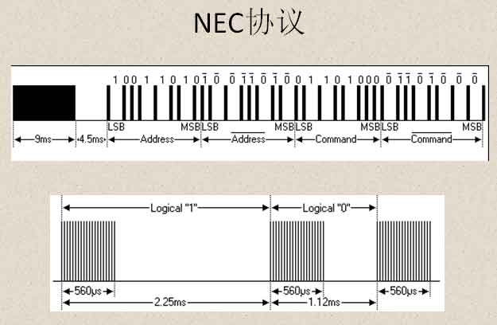 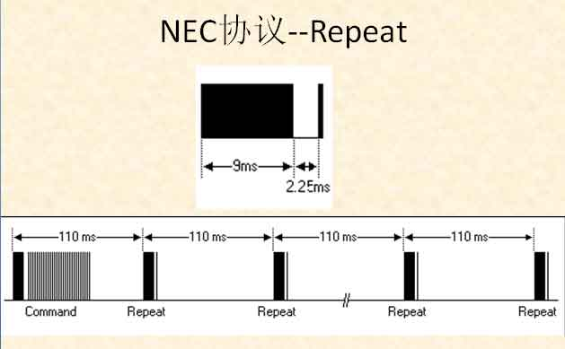 |
|
|
1.地址位和数据位都是8bit，为什么要发送32bit？ 德玛：鬼知道！你去问鬼吧，哈哈哈！ 盲僧：这你就不知道了吧，是这样的：为了提高红外发射和接受的抗干扰能力，NEC协议要求在发送地址码和数据码后跟上地址码和数据码的反码，用于接受端校正数据用。 2.为什么遥控器要用38KHz的载波信号？ 战争女神：平时都是拿钱办事，从不问为什么。就是这样。 无双剑姬：简单说就是为了抗干扰，红外遥控常用的载波频率为38kHz，这是由发射端所使用的455kHz晶振来决定的，在发射端要对晶振进行整数分频，分频系数一般取12，所以455kHz÷12≈37.9kHz ≈38kHz。也有一些遥控系统采用36kHz、40kHz、56kHz等， 一般由发射端晶振的振荡频率来决定。所谓抗干扰就是遥控器的中心频率要与接收头所用的频率一致，这样才能达到最好的接收效果。 3.为什么有的按键比如(Menu)就只能接受一次，而Volume按键一直按着可以一直响应？ 无极剑圣：无形的意志可以击穿顽石 德邦总管：从代码中的IR中断服务函数和码值处理函数可以看出，所有的Repeat码值都传到了上层，并没有做特殊处理。但是为什么呢？只有一种可能，就是上层做了特殊处理。经过苦苦的搜索发现，在MAPP_IR.C中 有函数MApp_CEC_CheckRepeatKey()作用。 |
|
|
红外接受头的特性： 红外线接收头要有滤光片，将白光滤除。在以下环境条件下红外接收头会影响接收，甚至很严重: 1、强光直射红外接收头,导致光敏管饱和,白光中红外成分也很强。 |
|
|
代码如何来软解码？ 既然接收头出来的信号是方波；是方波就会有高低电平，有高低电平就必然有电平的跳变。那么 就可以用外部中断来捕获电平跳变持续的时间，然后根据NEC协议，判0，判1，再通过变量的移位操作来保存二进制码，从而实现软解码的目的。 以下为一些代码的实现截图。 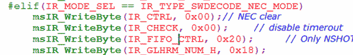 2.函数体 IR中断服务函数： 码值处理函数： 3.中断服务函数： 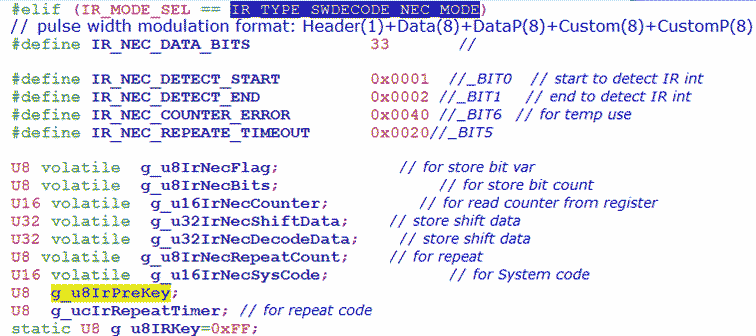 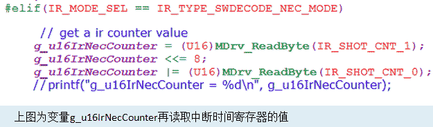 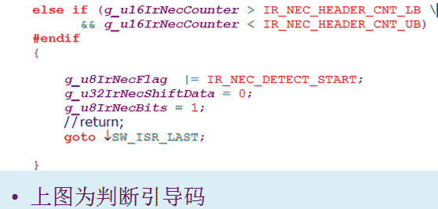 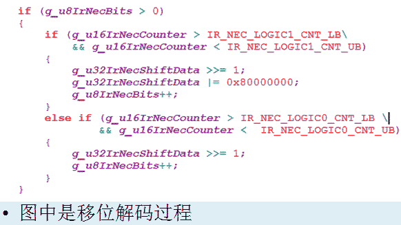 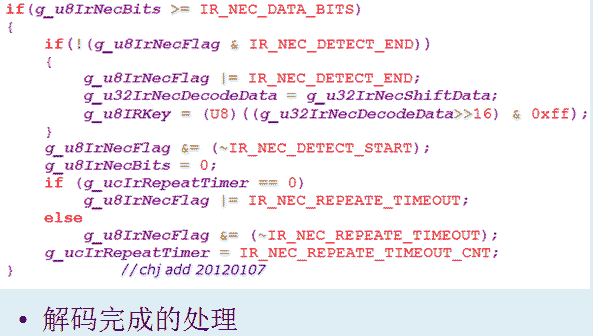 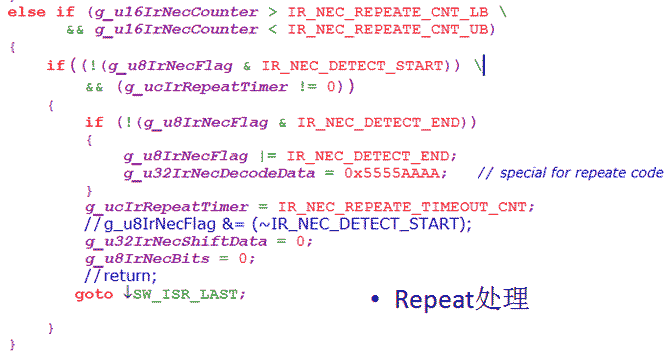 4.码值处理 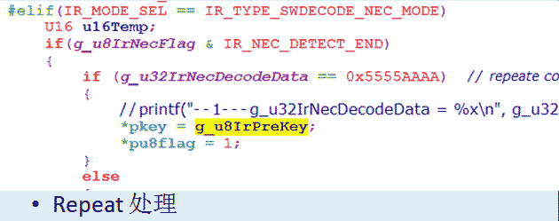 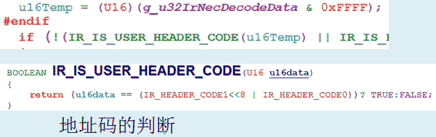 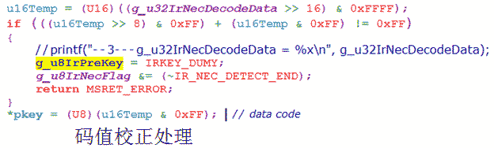 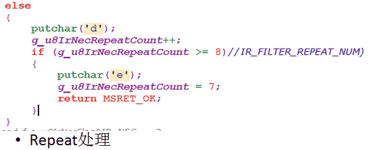 |
|
|
1.个人抓去的NEC遥控器波形图： 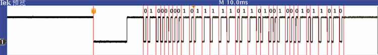 移位操作后：1011 0100 0100 1011 0111 1101 0000 0010 2.遥控器 Repeat 波形： 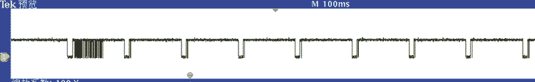 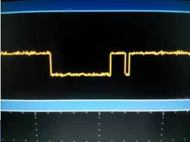
|
|
| [返回主页][返回顶部] | |
| ※※※※※※※※※※※※※※※【札 记 分 享】※※※※※※※※※※※※※※※ | |
| 禽兽之变诈几何哉？止增笑耳。 | |
| 本想沉溺于莲花深处，不料翻滚于水物之间 |
| 更新日期 2018年2月8日 星期四 18:00 |
| 欢迎访问官网 www.fy2000.org 蓝天的精灵工作室 |